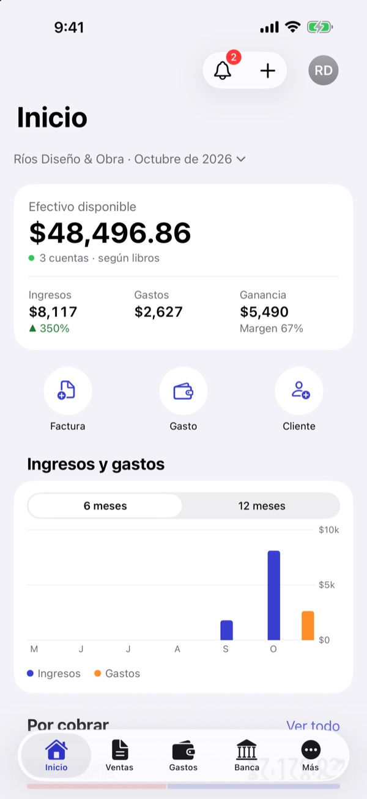
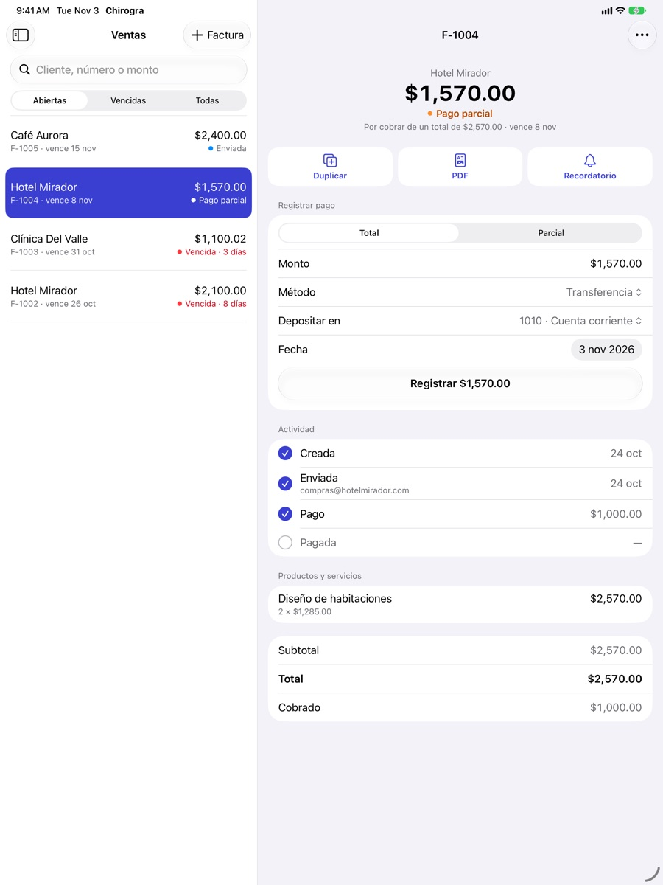
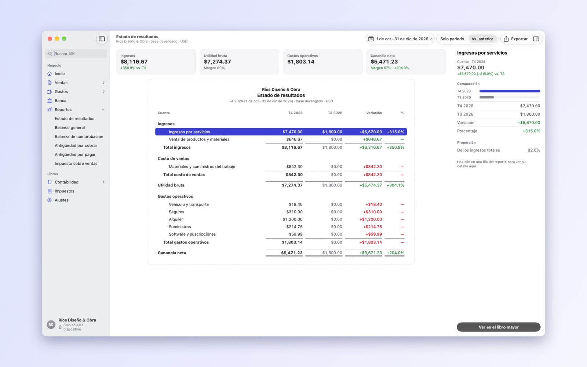

La contabilidad completa de tu negocio en iPhone, iPad y Mac. Facturas, gastos, sales tax y reportes, sin hojas de cálculo.
Próximamente en la App Store14 días de prueba gratis


Con tu logo y colores. Envíalas por correo, cobra pagos parciales y manda recordatorios.
Guarda la foto del recibo, programa pagos, paga en lote y lleva los recurrentes.
Tasas por estado, condado y ciudad, clientes exentos y lo que le debes a cada agencia.
Resultados, balance general, balanza y antigüedad de saldos, en PDF y CSV para tu contador.
Partida doble, plan de cuentas, asientos, libro mayor y cierre de periodo.
Toda la app en los dos idiomas, con los formatos de Estados Unidos.